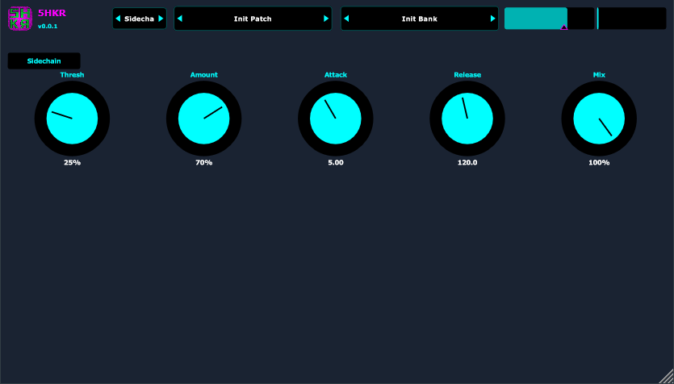
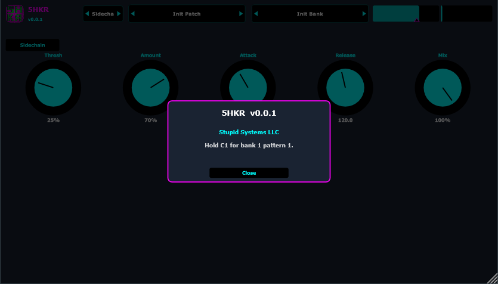

Perc groove box: eight synth lanes on a 16th-note grid, pattern banks, per-lane swing and loop length, and a sidechain duck. Not a sample player.

Install
Windows x64. MSI defaults: VST3 in Common Files\VST3, standalone in Program Files\Stupid Systems LLC\5HKR.
Zips on a release: 5HKR-*-win-x64-vst3.zip, 5HKR-*-win-x64-standalone.zip, and 5HKR-*-win-x64.msi.
Grid
- Lanes: CHH, OHH, Crash, Cym, Shaker, Clave, Cow, Rim. Mute with the lane name.
- Click a cell: off → on (cyan) → accent (magenta).
- Right-click a cell to set that lane’s loop end (magenta outline).
- Tune ±12 st and swing 50–75% per lane.
- Length 1 / 2 / 4 bars (16 / 32 / 64 sixteenths). Step pager when longer than one bar.
Pages and library
Title bar arrows cycle Main and Sidechain. Click the 5HKR title for About.
Patch bar: .5hkrp knobs. Bank bar: .5hkrb patterns. Init / Save / Save As / Export / Import from the bar menu.

MIDI
Hold C1 for bank 1 pattern 1 (Ableton C0). The groove runs while the key is held. Three banks × 12 patterns from MIDI note 24. VST3 follows host BPM.
Sidechain
Ducks the lanes from the plugin audio input. Thresh, Amount, Attack, Release, Mix. Enable with the Sidechain toggle.
